같은 에멀젼, 다른 네 이름. Optik OptiColour 200 의 정체
미국 인디 브랜드 Optik Oldschool 이 새 컬러 필름 OptiColour 200 을 공개했다. 그런데 안에 든 에멀젼은 ORWO Wolfen NC200 그대로다. 같은 InovisCoat 에멀젼이 네 가지 브랜드로 풀리는 이유와, Optik 이 손본 단 한 가지 차이를 정리한다.
필름 매거진 5ft magazine의 기획과 편집을 맡습니다.
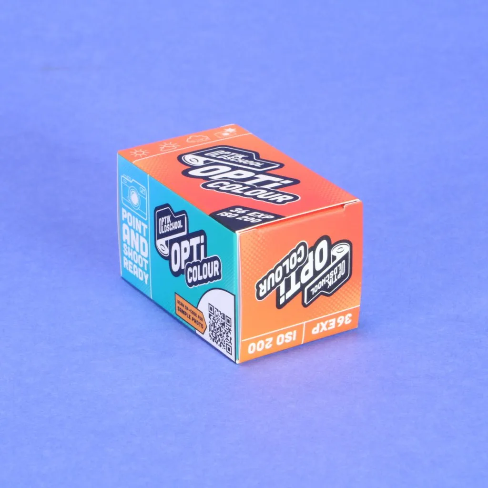
미국 인디 브랜드 Optik Oldschool 이 새 컬러 필름 OptiColour 200 을 공개했다. 그런데 안에 든 에멀젼은 ORWO Wolfen NC200 그대로다. 같은 InovisCoat 에멀젼이 네 가지 브랜드로 풀리는 이유와, Optik 이 손본 단 한 가지 차이를 정리한다.
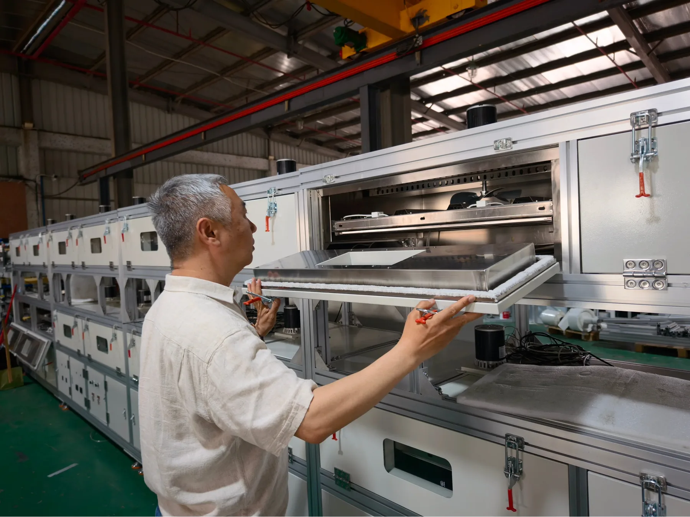
라이카 빈티지 렌즈를 1:1 복각해온 중국 라이트렌즈랩이 2025년 초에 필름 제조 계획을 발표했다. 1년 반이 지난 지금, 배합·코팅 장비·QC 라인까지 모두 사내에서 만드는 흐름이 어디까지 왔는지 정리.
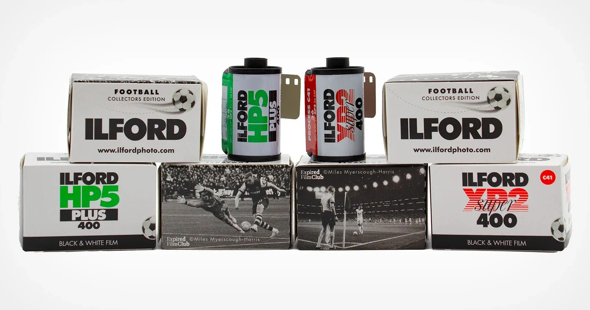
월드컵 개막에 맞춰 일포드가 HP5 Plus 와 XP2 Super 풋볼 컬렉터스 에디션을 내놨다. 유제는 그대로, 상자에 Expired Film Club 의 흑백 축구 사진이 입혀졌다.
요르고스 란티모스의 현장을 10년 가까이 기록해 온 스틸 포토그래퍼. 『가여운 것들』 곁에서 그는 디지털 대신 필름 카메라를 들었다.
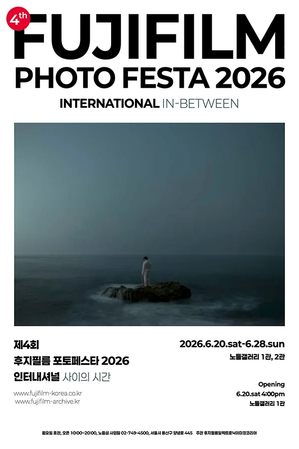
시리즈 15명·싱글 20명, 두 갤러리·아홉 날. 6월 노들섬에서 사진의 '잠시 멈춘 시간' 을 본다.

한 달 안에 닫히는 일곱, 여름까지 가는 다섯, 그리고 5년 만에 돌아온 서울사진축제 〈컴백홈〉. 6월 첫 주말이 가장 분주하다. 일정과 동선까지 한자리에.
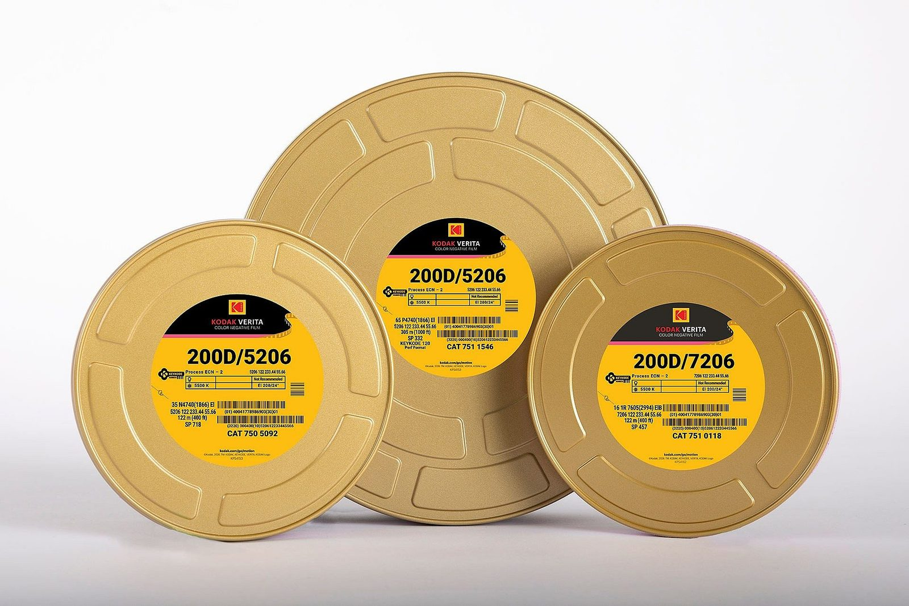
한쪽에선 코닥이 VERITA 200D 를 새로 풀었고, 다른 한쪽에선 후지필름의 흑백 라인이 정리된다는 이야기가 빠르게 번졌다. 두 사건이 같은 결론에 닿는 이유.
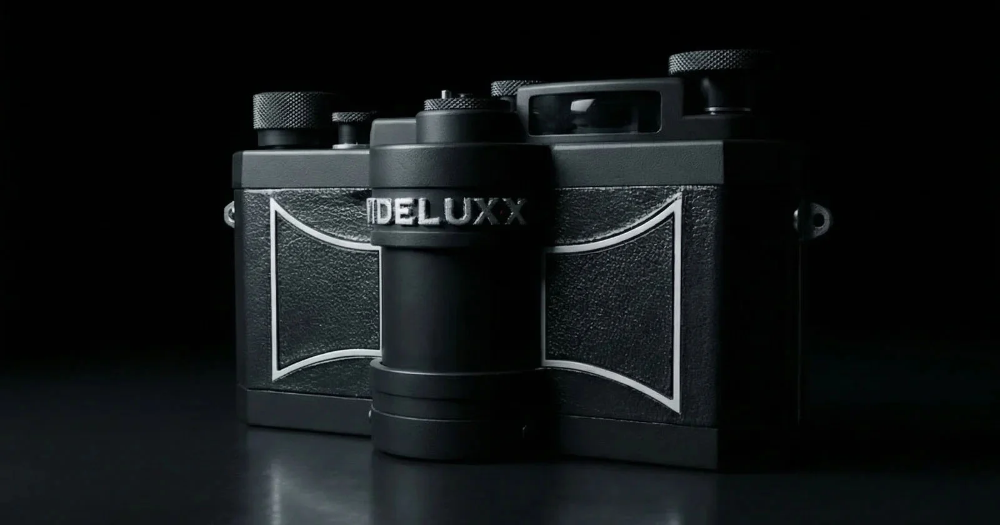
Jeff Bridges 가 차린 SilverBridges 가 독일 베츨라에서 Widelux 의 첫 시제품 0001 을 공개했다. 일본에서 1958 년에 처음 만들어진 스윙렌즈 파노라마 카메라가 26 년 만에 부활을 시작한다.
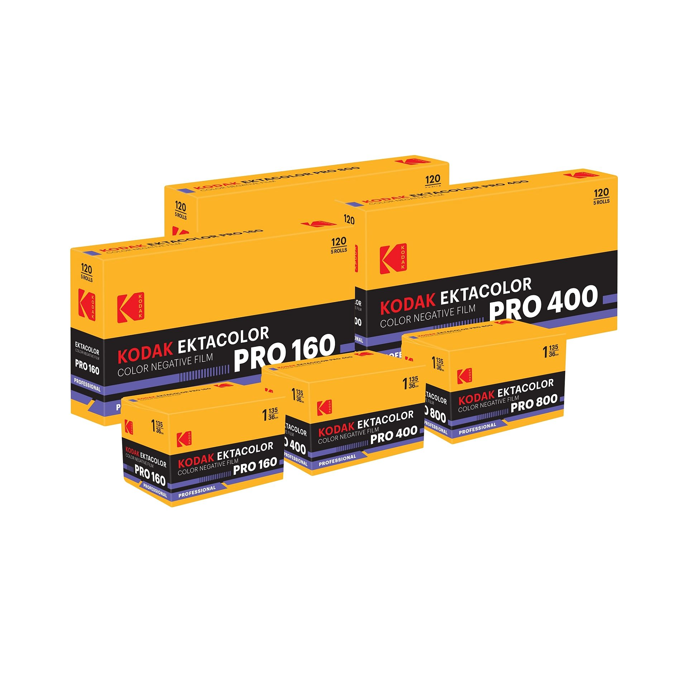
Portra 가 Ektacolor Pro 로, T-Max 가 Ektapan 으로 이름을 바꿔 다시 나왔다. 이름만 바뀐 게 아니라, 14년 만에 코닥이 자기 필름을 자기 손으로 팔게 된 신호다.

2025년 10월, 로모그래피가 처음 자동 초점을 단 35mm 컴팩트를 내놓았다. 변화는 분명했고, 첫 물량의 흔들림도 분명했다.
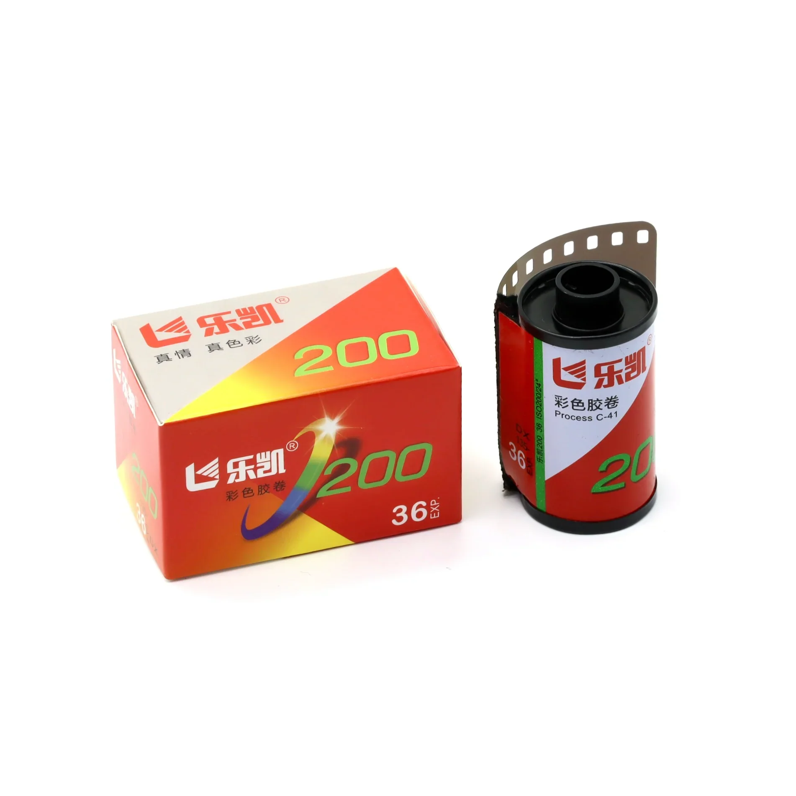
Lucky가 컬러를 되돌리고, Shanghai는 흑백을 이어가고, Reflx Lab은 시네필름을 가정용으로 옮긴다. 중국 필름 생태계의 세 풍경.
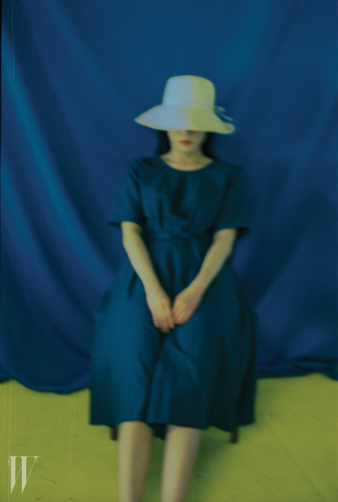
5월, 봄이 짧기에 미술관은 부지런하다. 서울사진축제 〈컴백홈〉부터 GCP 개관전, 성곡미술관 프랑스 사진전, 그리고 최랄라 개인전까지 — 같은 시간 위에 머무는 네 개의 시선.
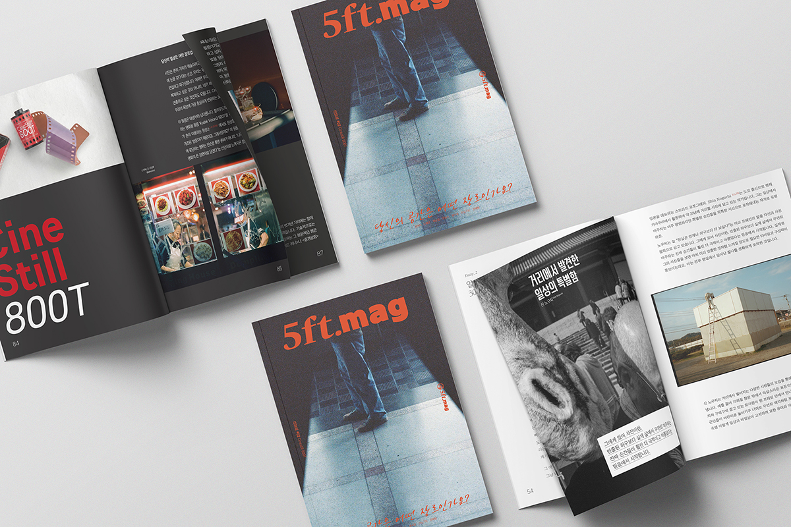
두 번째 이야기. 시네스틸 800T가 펼치는, 당신의 공간 — 그 장르는 무엇인가. 노애경, 박순렬, 장형수 작가의 사진과 신노구치 작가 인터뷰까지 — Vol.02 콘텐츠 전체 미리보기.

5ft.mag Vol.01에 참여한 노애경, 박순렬, 장형수 작가의 대표 사진과 작업노트 일부를 따라가 보는 짧은 소개.
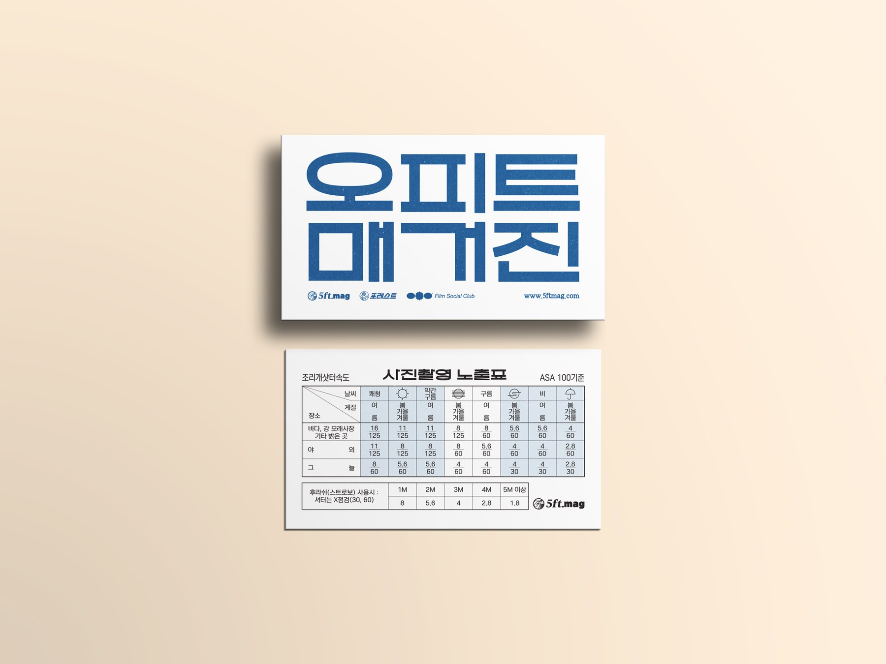
5ft.mag Vol.01 창간호 구매자에게 함께 보내는 굿즈 두 가지. 조리개·셔터속도 노출표 카드와 필름 박스 스티커를 소개합니다.
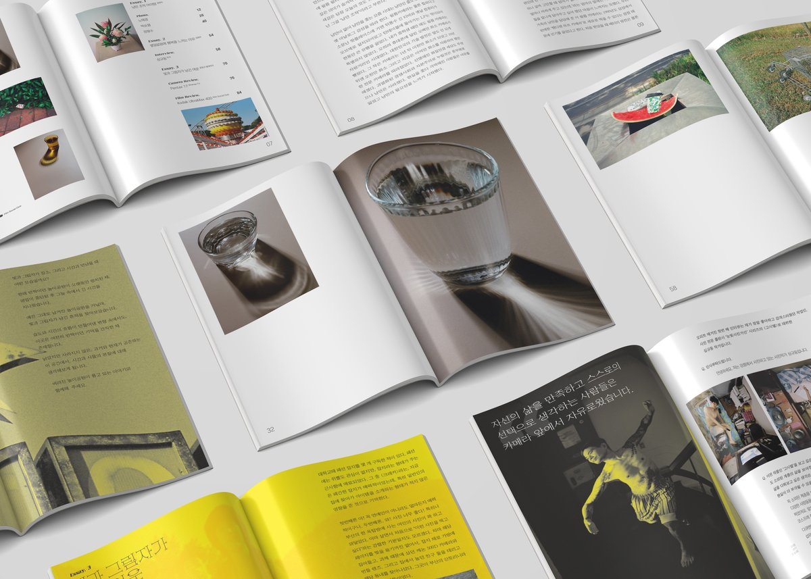
E-book 22권을 내고 1년을 다시 준비했다. 마침내 종이 위에 새겨진 5ft.mag 정식 창간호. 그 안에 무엇이 담겼는지 살짝 들여다본다.